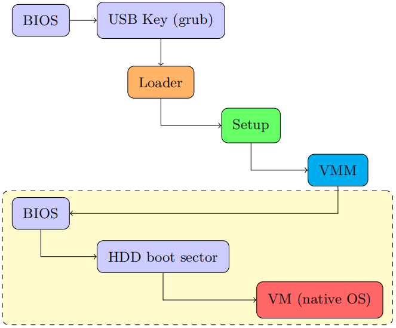

想法
Ramooflax

ramooflax 紧接着 BIOS 之后运行，之后其可以将 native 的 os 放到虚拟机中运行。
[https://github.com/airbus-seclab/ramooflax]
这启发我们，QEMU + unikernel 的制作可以采取类似的运行流程，只是需要将 intel vmx 加速的虚拟化替换为二进制翻译器即可。而且，host 将设备完全交给 guest
管理，证明了设备直通的可行性。
背景
Linux + QEMU 实现系统态翻译的几个部分
| 内容 | 二进制翻译模拟方法 | kvm |
|---|---|---|
| CPU | tcg 逐条指令翻译 | 硬件加速, 相同架构指令直接执行 |
| 内存 | softmmu | two dimension paging |
| 设备 / 中断 | 设备模拟 / virtio / VFIO [ref] | 设备模拟 / virtio / VFIO |
背景
Linux + QEMU 实现系统态翻译 : xqm 加速 cpu 虚拟化

为了实现多个架构之间互相翻译，QEMU 采用了 tcg ir, 但是这导致了翻译质量下降。
而 x86-qemu-mips 项目将 tcg 移除掉了。